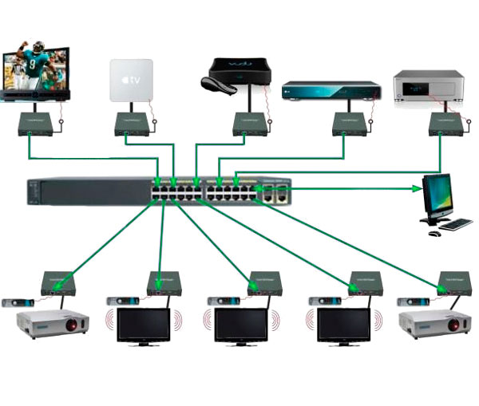

Ethernet անջատիչների կարգավորում

Cisco LAN անջատիչները կարողանում են կատարել իրենց հիմնական խնդիրը
(Ethemet շրջանակի վերահասցեավորում) առանց որևէ կոնֆիգուրացիայի: Միանգամայն հնարավոր է գնել
Cisco կոմուտատորը, տարբեր սարքերից համապատասխան մալուխները միացրեք դրան, միացրեք հոսանքը, և անջատիչը կաշխատի։ Սակայն ցանցերի մեծ մասում ցանցային ինժեներին անհրաժեշտ է կարգավորել և օգտագործել անջատիչի տարբեր գործիքներ:
Անջատիչի տարբեր հարմարանքներ քննարկվում են այս գլխում: Նախ, մենք քննարկում ենք ադմինիստրատիվ գործիքների մի շարք, որոնք հավասարապես կիրառելի են ինչպես երթուղիչների, այնպես էլ անջատիչների համար. դրանք խմբավորված են այս գլխում, որպեսզի հետագայում, երթուղիչների հետ աշխատելիս, դրանց նկարագրությունը ավելի հեշտ գտնվի: Հետո կլինի
ցույց տվեց անջատիչի որոշ հատուկ հատկանիշների կոնֆիգուրացիան,
որոնցից շատերը ազդում են անջատիչով շրջանակների փոխանցման վրա:
--------------------------------------------------------------------------------------------------------------------------------------------------------------------------------------------------------------------------------------------------------------------------------------------------------------------------------------------------------------------
Անվտանգ մուտք դեպի անջատիչ հրամանի տող
Անջատիչի ապահովման առաջին քայլը CLI ինտերֆեյսի մուտքի ապահովումն է: Նա է
ենթադրում է արտոնյալ ռեժիմի հասանելիության պաշտպանություն, քանի որ դա հենց այդպես է
այնտեղից հարձակվողը կարող է վերագործարկել անջատիչը կամ փոխել դրա կոնֆիգուրացիան: Միևնույն ժամանակ, օգտատիրոջ ռեժիմի պաշտպանությունը նույնպես կարևոր է, քանի որ հարձակվողը կարող է դիտել անջատիչի վիճակը և, իմանալով ցանցի մասին տեղեկատվություն, գտնել դրա վրա հարձակվելու նոր ուղիներ։
Դիտարկենք օգտատիրոջ օրինակը, ով մուտք է գործում անջատիչ վահանակի միջոցով:
Վահանակի կանխադրված կոնֆիգուրացիան թույլ է տալիս կոնսոլի օգտագործողին գնալ
օգտագործողի ռեժիմից արտոնյալ ռեժիմ՝ առանց գաղտնաբառ մուտքագրելու: Այն ունի
իմաստ ունի, քանի որ կոնսոլից օգտվելիս ցանցի ինժեները սովորաբար անջատիչի կողքին է: Եթե անջատիչը ֆիզիկապես հասանելի է, ապա վահանակի գաղտնաբառի պաշտպանությունը հաղթահարվում է գաղտնաբառի վերակայման և վերականգնման ընթացակարգով րոպեների ընթացքում:
հինգը, այսպես թե այնպես, անջատիչի վահանակը հասանելի կդառնա: Հետեւաբար, ի սկզբանե
վահանակի մուտքը բաց է: Այնուամենայնիվ, ցանցային ինժեներների մեծ մասը
սահմանել պաշտպանություն վահանակի մուտքի համար, ինչպես նաև: